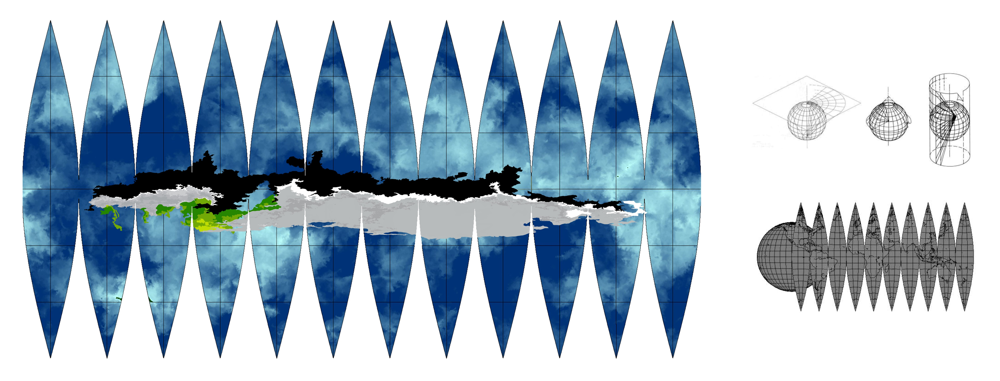

지도를 만드는 방법 (How to create a map)
2023, 9′, Experimental
기차 여행 중 나눈 대화를 텍스트로 작성해 영상으로 구성한 <지도를 만드는 방법>에서는 그 공간을 직접 보아야만 지도를 그릴 수 있다는 ‘민’과 낙원에 대한 글을 쓰는 친구 ‘준’이 등장한다. ‘불투명함으로 가득한 공간에서 지도를 어떻게 만들 수 있을까?’라는 질문으로 이야기는 시작되며 이 둘은 기억에 대한 각자의 생각을 나눈다.
In the video titled "How to create a map" based on a conversation during a train journey, two characters appear: 'Min,' who believes one must see a space directly to map it, and 'Jun,' a friend writing about paradise. The story begins with the question, "How can you create a map of a space filled with opacity?" Throughout, they share their individual perspectives on memory.
기획 - 김준서, 신성민
촬영 - 신성민
편집 - 신성민
사운드 - 신성민
Filming - Shin Seongmin
Editing - Shin Seongmin
Sound - Shin Seongmin
3D Animation - Shin Seongmin
